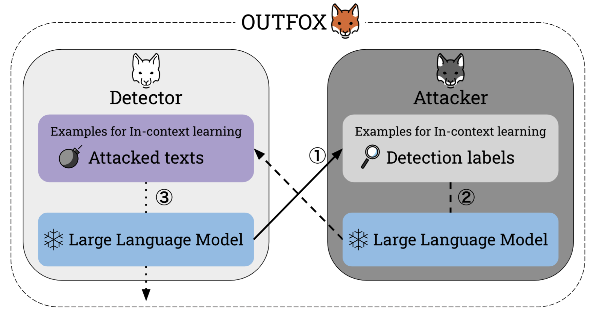
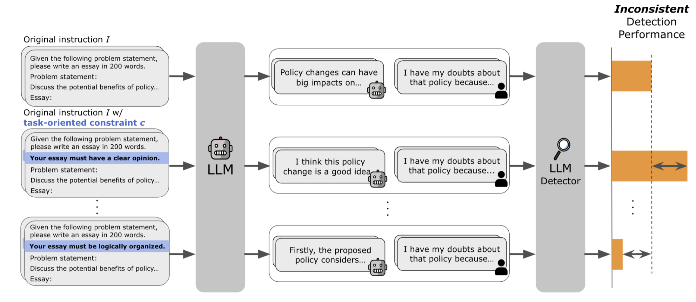
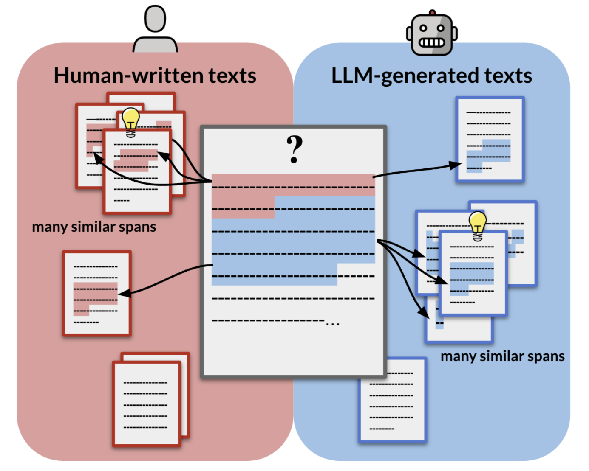
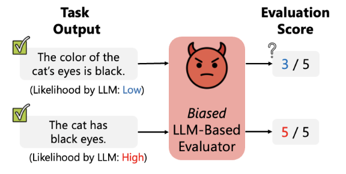

Hello! I am a final-year PhD student (est. March 2026) at the Institute of Science Tokyo, advised by Prof. Naoaki Okazaki. During my PhD, I joined Prof. Chris Callison-Burch lab at Penn NLP as a Visiting Researcher in 2024. I also work closely with Prof. Preslav Nakov at MBZUAI NLP. Outside of academia, I am involved as a research advisor for a startup on multi-lingual text generation.
|
Email: ryuto.koike [at] nlp.c.titech.ac.jp 


|

|
|
I am passionate about making AI systems actually work in the real world, with research interests in AI
Safety/Privacy, Trustworthy AI,
Robustness, Interpretability, and Evaluation.
Currently, I am exploring the automated detection of AI‑generated content, specifically on
building deployable detectors in practical scenarios with minimum harm. |
|
|
|
|
 |
AAAI 2024
TL;DR - We propose OUTFOX, a novel framework that improves the robustness of LLM text detectors by
allowing both the detector and the attacker to adversarially learn from each other's output through
in-context learning. In this framework, the attacker uses the detector's prediction labels as examples
for in-context learning and adversarially generates essays that are harder to detect, while the
detector uses the adversarially generated essays as examples for in-context learning to learn to
detect essays from a strong attacker.
🏆 Double
Sponsorship Awards (1/140 ≈ 0.7%) in YANS
📸 Featured in Nikkei, NAACL Tutorial, Originality.ai Blog |
|
 |
Ryuto Koike, Masahiro Kaneko, Naoaki Okazaki EMNLP 2024 (Findings)
TL;DR - We reveal that current detectors are brittle to instruction variation in text
generation.
Specifically, even task-oriented constraints - constraints that would naturally be included in an
instruction and are not related to detection-evasion - cause existing powerful detectors to have a
large variance in detection performance.
We raise awareness of the need to ensure prompt diversity when creating a detection benchmark and
open-source our constrained dataset.
|
|
 |
Ryuto Koike, Masahiro Kaneko, Ayana Niwa, Preslav Nakov, Naoaki Okazaki NeurIPS (In submission)
TL;DR - We Propose ExaGPT, an interpretable AI text detector that identifies a text by checking
whether it shares more similar spans with human-written vs. machine-generated texts from a datastore
and presents those spans as evidence for users to assess how reliably correct the decision is.
|
|
 |
Masanari Ohi✝, Masahiro Kaneko, Ryuto Koike, Mengsay Loem, Naoaki Okazaki ACL 2024 (Findings)
TL;DR - We present a self-preference bias in LLM-as-a-judge i.e., LLMs overrate texts with higher
likelihoods while underrating those
with lower likelihoods. We also propose a simple but effective mitigation method via in-context
learning.
|
|
|
|
University of Pennsylvania
Philadelphia, PA, USA 2024.10 - 2025.04 Visiting Researcher Advisor: Chris Callison-Burch |
|
|
Mohamed bin Zayed University of Artificial Intelligence (MBZUAI)
Remote 2024.04 - Present Research Collaborate Advisor: Preslav Nakov |
|
|
|
Institute of Science Tokyo (Formerly, Tokyo Tech)
Tokyo, Japan 2023.04 - est. 2026.04 Ph.D. in Computer Science Advisor: Prof. Naoaki Okazaki |
|
|
Keio University
Tokyo, Japan 2017.08 - 2023.05 M.S. in Computer Science B.S. in Computer Science |
|
©︎ Ryuto Koike / Design: Jon Barron. |